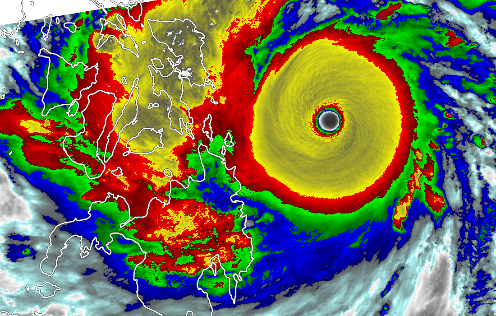

彩虹围巾
分别前，德国志愿者本杰明把一条彩虹围巾递给夏飞，回赠他送来的口罩和手套。就在那天下午，两人进了一片积水齐腰的雨林，帮一个男孩寻找父亲。

2013年11月8日，超强台风“海燕”登陆菲律宾中部，风暴潮重创沿海。11月20日，中国红十字会启动新中国成立以来首次赴外救灾行动。北京蓝天救援队8名队员随队赴菲，24日在塔克洛班扎营，开展遗体搜寻和疫情排查。当地市长协助先遣队了解医疗和搜救的覆盖情况，判断哪里还需要人手。
12月2日，夏飞和队友开车去另一座小城，查看附近还有哪些村庄需要帮助。路上他们遇见骑摩托车的本杰明。他和几名当地人带着袋子和消毒设备，正在处理灾后遗体。那天下午，几人一起走进一片雨林，帮一个男孩找父亲。积水没过腰际，本杰明游过去，找到了男孩父亲的遗体，并拉出水面。男孩和家人一再道谢。搜寻结束当天，夏飞把随身多带的口罩和手套送给本杰明，本杰明回赠了那条围巾。
市长帮先遣队了解灾情，夏飞和本杰明又与当地人一道进了雨林。从这次跨国人道协作看人类命运共同体，能看到不同地方的人怎样为同一个家庭接力。
